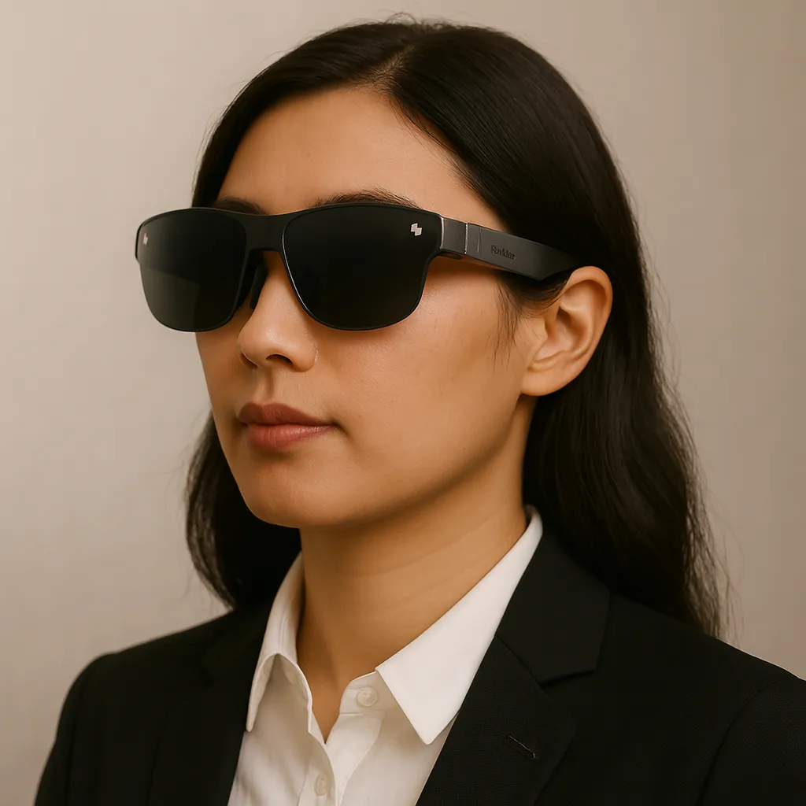

RayNeo AR Glasses Roadmap
RayNeo combines TCL's consumer-electronics scale with a broad glasses portfolio. Its current range spans personal-display glasses and optical-see-through AI products, so specifications and use cases should be assessed model by model.

Roadmap dates: confirmed milestones
These dates are based on public announcements and published industry research. They are milestones and market snapshots, not a promise that every future capability will arrive on a particular date.
IDC reported RayNeo at 3.6% of the Q2 2026 smart-glasses market, making it the second-largest vendor in that table. RayNeo's share was up 83.3% year over year, according to IDC.
RayNeo's current portfolio spans personal-display products such as Air 4 Pro and spatial AI glasses such as X3 Pro. The X3 Pro uses a full-colour MicroLED waveguide, 30° FOV and 6DoF + SLAM support.
IDC market snapshot
IDC reported RayNeo at 3.6% of the Q2 2026 smart-glasses market table, with year-over-year growth in the tracked category.
Display + AI expansion
RayNeo is continuing to develop lighter display glasses and more capable AI/optical products across its portfolio.
What to watch next
Watch for new hardware, optical improvements, AI capabilities, regional availability, prescription support and evidence of broader developer or ecosystem adoption. Forward-looking developments can change as companies update their plans.
Our outlook — analysis, not a launch prediction
The next stage of this roadmap will depend on product execution, software support, hardware constraints and how quickly useful experiences become practical for everyday wear. Treat unannounced dates and specifications as unconfirmed until the company publishes them.